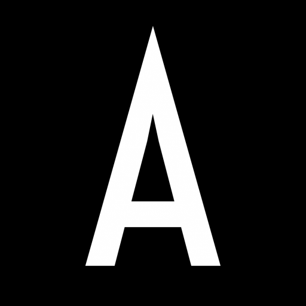

Tipografia
Escala tipográfica expressiva composta por Space Grotesk (títulos e display), Inter (corpo e leitura) e IBM Plex Mono (metadados e dados técnicos).
MELLO
Design System.
De números a estratégia: uma trajetória construída em cima de dados reais.
COMERCIAL
Interface minimalista de alta precisão com estética Void Black, superfícies Deep Surface e sinal gráfico Event Red.
Analista de dados no time de crédito. Primeiro contato com dados em escala: milhões de transações, decisões em tempo real, cultura orientada a evidências.
Cores Semânticas
Paleta oficial extraída do Manual AUVELOIR 1.0, organizada por função, contraste e superfície.
Brand & Accent (Sinais Gráficos)
Cor primária e assinatura gráfica AUVELOIR. Feixe de luz, acentos pontuais e ênfase.
Estado de foco e interação elevada sobre botões e seletores primários.
Projeção de luz difusa em botões beam, bordas de cards e atmosferas de fundo.
Fundos de badges, tags de experimento e pílulas de categorização de status.
Superfícies & Canvas
Canvas absoluto de fundo de página. Proporciona alto contraste e imersão escura.
Superfície táctil para painéis, miolos de botões beam e cards de primeiro nível.
Superfície elevada em estado hover nos cards bento e depoimentos.
Fundo de seções de alta densidade (Timeline e Laboratório de Experimentos).
Tipografia & Contraste (WCAG 2.2 AA)
Títulos, botões primários e cabeçalhos. Máxima nitidez ótica.
Parágrafos, subtítulos e descrições técnicas.
Metadados secundários, copyright de rodapé e números de versão.
Família de Estados Interativos
| Estado | Fundo / Superfície | Borda | Sombra / Efeito | Uso Observado |
|---|---|---|---|---|
| Default | #14171E (Deep Surface) |
rgba(167, 173, 186, 0.12) |
none / 0 20px 40px rgba(0,0,0,0.4) |
Repouso de cards e botões. |
| Hover | #1C202A (Surface Hover) |
rgba(196, 22, 50, 0.45) |
translateY(-3px) + glow 0 15px 35px var(--primary-glow) |
Passagem do cursor em cards e botões. |
| Active | #090B10 |
#C41632 (Event Red) |
scale(0.98) |
Clique e acionamento tátil. |
| Focus | Preserva superfície | Anel de 2px sólido | outline: 2px solid var(--primary); outline-offset: 3px; |
Navegação acessível por teclado via Tab. |
Planos de Fundo
Amostras ao vivo de cada plano de fundo observado na Overview, preservando suas camadas, gradientes e ruído de granulação digital.
Superfícies & Vidro
Superfícies táteis compostas por vidro fosco escuro (*dark glass*), desfoque gaussiano, bordas refratárias e sombras de elevação.
Deep Surface
Superfície pura sem desfoque. Utilizada na base de botões e cartões estáticos.
Glassmorphism Timeline
Vidro fumê com desfoque de 14px e borda reflexiva. Utilizada na Linha do Tempo.
Kinetic Prismatic Glass
Vidro de alta saturação com borda superior vermelha e brilho interno.
Ícones & Símbolos
Símbolos e glifos originais utilizados na marca, nas tecnologias e nos cards de projetos.

Ações & Botões
Botões interativos com o efeito característico de feixe cônico em rotação perimétrica (*perimeter beam*) e glow difuso em Event Red.
Badges & Status
Indicadores visuais de estado, experiência e metadados de sistema.
Cards & Containers
Contêineres de conteúdo com 3D tilt, rastreamento de lanterna no mouse e geometria assimétrica.

Dashboard
comercial
Centralizou métricas de vendas e inadimplência em um painel único.
Linha do Tempo
Estrutura cronológica com ponto focal em Event Red, logotipo corporativo e card de vidro fosco.
Integrou o time de analytics de produto. Trabalhou com métricas de engajamento e retenção, desenvolvendo modelos preditivos usados por squads de produto globais.
Movimento & Marquee
Faixa cinética horizontal contínua de 45 segundos, com pausa ao hover e cartões de experimento.